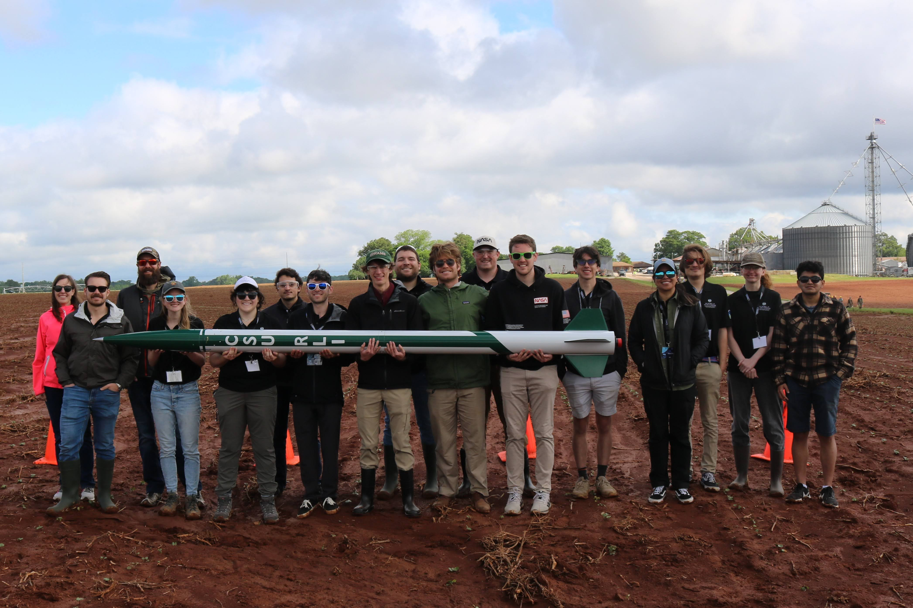
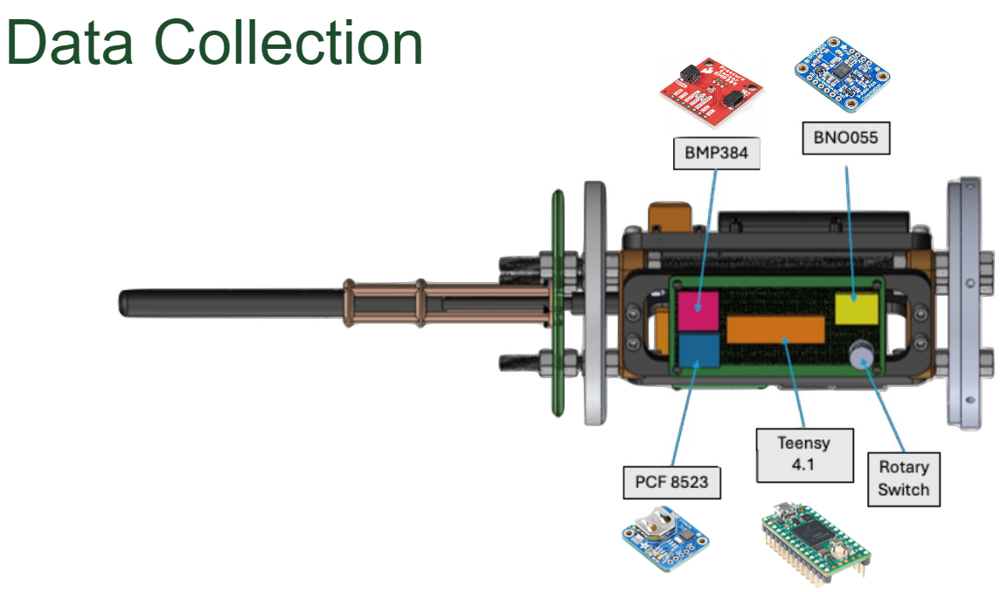

NASA University Student Launch
As Payload Bay Specialist for CSU’s 2024–25 NASA University Student Launch team, I worked at the interface between mechanical design and embedded electronics. My role centered on developing the payload-bay architecture, packaging its avionics, and ensuring the subsystem could be integrated into the larger launch vehicle.
My focus: Payload bay design, CAD, electronics packaging, sensor integration, system analysis, and design-review documentation.

Payload / Data collection
I designed and analyzed the payload bay assembly in SolidWorks while using Fusion 360 Electronics to develop and organize the electronics architecture. The system integrated a Teensy 4.1 with a BNO055 inertial measurement unit, BMP384 pressure sensor, and PCF8523 real-time clock, requiring the mechanical layout and electronics to be developed together within the available payload volume.

Integration & design reviews
Beyond component packaging, I worked on subsystem-level integration and analysis leading into the Preliminary Design Review. This included evaluating the payload architecture, identifying integration constraints, and refining the avionics layout so the mechanical and electrical systems could function as a single flight-ready assembly.
The project gave me experience working within a formal aerospace design cycle rather than treating the payload as an isolated component. Design decisions had to account for interfaces with the airframe, avionics, competition requirements, and the work of other subsystem teams.
Competition & experience
CSU finished 7th overall out of 68 teams in the NASA University Student Launch competition. The project became one of my first experiences taking ownership of a rocket subsystem from CAD and electronics integration through formal design reviews and vehicle-level integration.